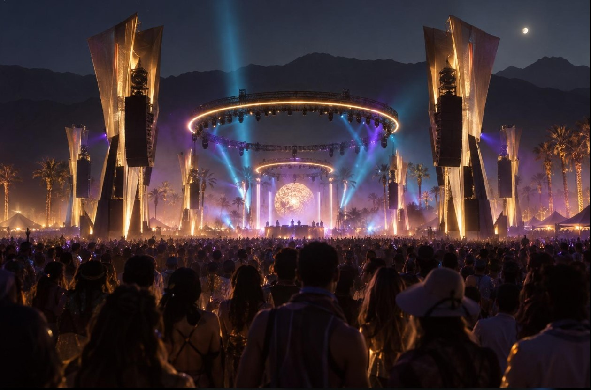
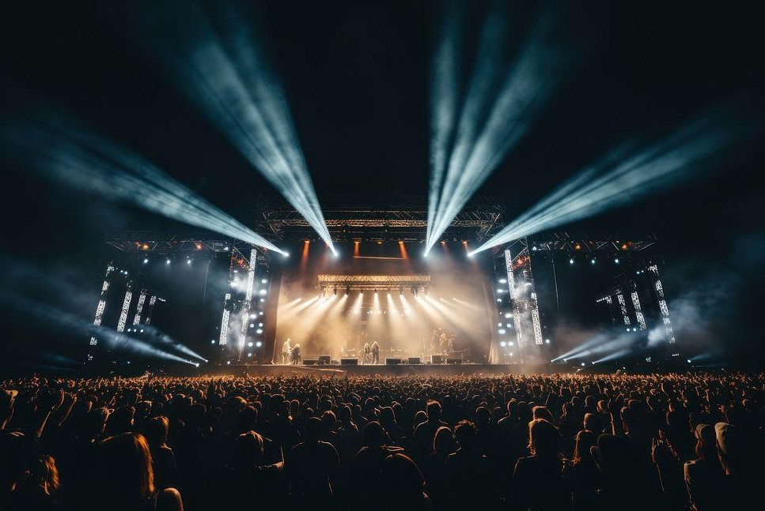
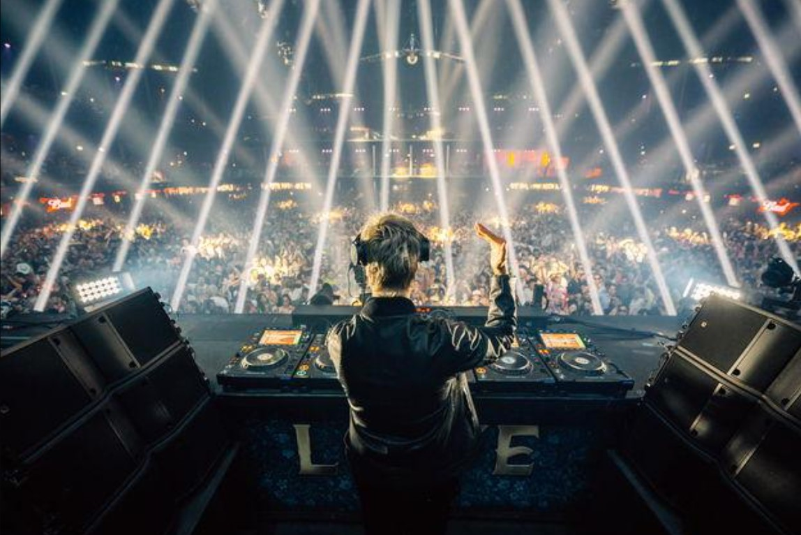
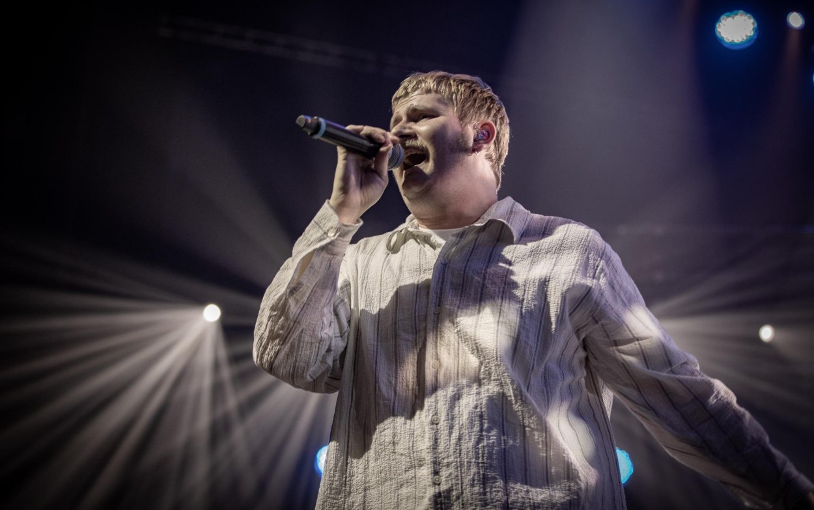
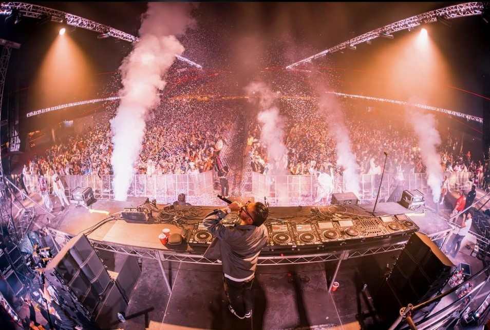
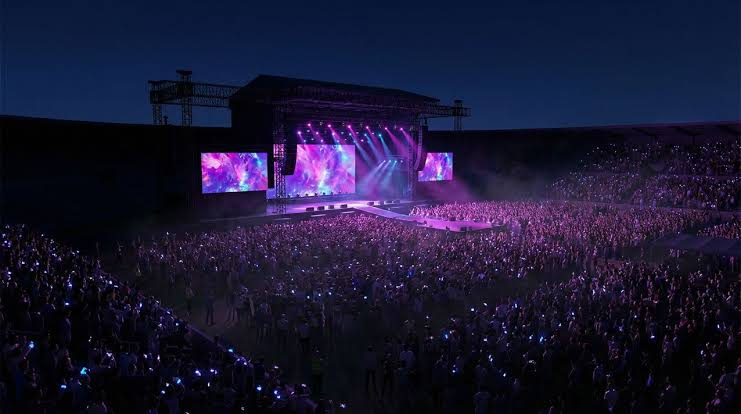

MÚSICA · ARTE · EXPERIENCIA
AFRA FEST
Una noche diferente, grandes artistas y una experiencia para compartir con amigos. Descubrí nuevos sonidos, disfrutá de la música en vivo y formá parte de una propuesta que reúne música, arte y encuentro.
15 DE NOVIEMBRE | BUENOS AIRES
CONOCÉ LAS ENTRADAS
VIVÍ AFRA FEST
Luces, música y momentos que quedan en el recuerdo. El escenario, los artistas y el público forman parte de una experiencia compartida que convierte cada presentación en algo especial.
UNA NOCHE ÚNICA
Un escenario preparado para disfrutar cada momento.

LA MÚSICA NOS UNE
Compartí la experiencia con tus amigos.

EL MOMENTO ES AHORA
Viví la música de una manera diferente.
¿QUÉ ES AFRA FEST?
AFRA FEST es una propuesta de festival musical dirigida a jóvenes que quieren disfrutar de distintos estilos, descubrir artistas y compartir una noche diferente. Busca reunir música, expresión artística y encuentro social en un mismo espacio.
La idea es que el público pueda disfrutar de los espectáculos, conocer nuevas propuestas musicales y vivir una experiencia colectiva. La música funciona como un punto de encuentro entre personas con gustos e intereses diferentes.
MÚSICA EN VIVO
Distintos estilos y artistas forman una programación variada, con propuestas para diferentes gustos.
UN GRAN AMBIENTE
Un espacio para bailar, conocer gente y compartir la música con amigos de manera respetuosa.
UNA EXPERIENCIA
Sonido, iluminación y una puesta en escena que acompaña las presentaciones de cada artista.
¿QUÉ NOS HACE DIFERENTES?
AFRA FEST no se trata solamente de asistir a un recital. La propuesta reúne expresiones musicales diferentes para que el público descubra nuevos sonidos y comparta intereses.
DESCUBRIR
Conocer artistas y géneros diferentes permite ampliar los gustos personales y encontrar nuevas propuestas.
COMPARTIR
Disfrutar un evento con amigos y otras personas convierte la música en una experiencia colectiva.
EXPRESARSE
La música es una forma de expresión artística que transmite ideas, emociones y maneras de ver el mundo.
ARTISTAS DESTACADOS
Tres propuestas diferentes le dan identidad al festival. Cada artista aporta su propio estilo para mantener una programación variada durante la noche. Los nombres forman parte de la propuesta ficticia del proyecto.

DJ NOVA
DJ Nova representa la música electrónica. Sus mezclas combinan ritmos modernos y sonidos intensos para acompañar los momentos de baile y generar una atmósfera llena de energía.
Su presentación está pensada para quienes disfrutan de las mezclas y los sonidos electrónicos.
Ver entradas
LUNA
Luna aporta una propuesta de música pop, con canciones melódicas y estribillos que invitan al público a cantar y participar durante el espectáculo.
Su show busca generar una conexión entre la artista y el público mediante melodías, emoción y energía.
Ver entradas
MAX BEATS
Max Beats representa los ritmos urbanos, con sonidos actuales y una propuesta relacionada con la cultura juvenil.
Su estilo combina bases rítmicas y una presentación dinámica que suma variedad a la programación musical.
Ver entradasUNA PROPUESTA PARA DISTINTOS GUSTOS
La variedad musical es uno de los aspectos centrales de AFRA FEST. Combinar estilos permite que el evento no se centre en un único género y que el público disfrute distintas formas de expresión.
ELECTRÓNICA
Se caracteriza por sonidos producidos o modificados con herramientas electrónicas. En el festival aporta ritmos para bailar y disfrutar de las mezclas de un DJ.
POP
Suele combinar melodías reconocibles, estribillos fáciles de recordar y distintas influencias. Es un estilo que invita a cantar en grupo.
MÚSICA URBANA
Reúne sonidos contemporáneos y se relaciona con la cultura, el lenguaje y las experiencias de distintas comunidades y generaciones.
MUCHO PARA DISFRUTAR
AFRA FEST no es solamente escuchar música. Es compartir una noche, conocer gente y disfrutar de cada detalle. La propuesta combina espectáculos en vivo, un espacio de encuentro y una ambientación especial.

EL ESCENARIO
El escenario es uno de los elementos centrales del festival. La iluminación, el sonido y la presentación de los artistas ayudan a construir el ambiente de cada espectáculo.
La puesta en escena acompaña las presentaciones y destaca las características de cada propuesta musical.
EL ENCUENTRO
Compartir un festival con amigos permite disfrutar la música de manera colectiva. El público también forma parte de la identidad del evento.
AFRA FEST busca ser un espacio para conectar personas, compartir intereses y construir recuerdos.
¿CÓMO SE ORGANIZA EL FESTIVAL?
Organizar un festival requiere planificar distintos aspectos para que la experiencia sea ordenada. La programación musical, la preparación del espacio y la información para los asistentes son partes importantes de la propuesta.
PROGRAMACIÓN
La selección de artistas y géneros permite organizar una propuesta variada. Cada presentación forma parte del recorrido musical del evento.
ESPACIO
La distribución del lugar, el escenario y los sectores para el público ayudan a facilitar la circulación y el disfrute de los espectáculos.
INFORMACIÓN
Comunicar la fecha, los precios y las condiciones de acceso permite que los asistentes conozcan la propuesta antes de participar.
ELEGÍ TU ENTRADA
El proyecto presenta dos categorías de entradas como ejemplo de opciones de acceso. Los precios son ilustrativos y no corresponden a una venta real.
GENERAL
Acceso general a la propuesta musical y a los espectáculos incluidos en la programación.
Una opción para quienes buscan disfrutar la experiencia del festival y compartir una noche dedicada a la música.
$15.000
CONSULTARVIP
Una alternativa que representa una experiencia de acceso preferencial y un sector diferenciado.
Las condiciones concretas de esta categoría deberían confirmarse en una organización real del evento.
$25.000
CONSULTARPrecios ilustrativos para el proyecto escolar. Esta página es una presentación del evento y no procesa pagos ni vende entradas reales.
ANTES DE VENIR
Conocer la información del evento y organizar la asistencia con anticipación ayuda a disfrutar de la experiencia y a evitar inconvenientes.
PLANIFICÁ TU LLEGADA
Revisá el horario y el lugar del evento. Organizar el traslado permite llegar con tiempo y evitar inconvenientes.
INFORMATE
Consultá las condiciones de ingreso y seguí las indicaciones que comunique la organización.
CUIDÁ EL ESPACIO
Respetá al resto del público, seguí las indicaciones del personal y colaborá para mantener limpio el lugar.
LA MÚSICA COMO FORMA DE EXPRESIÓN
La música ocupa un lugar importante en la cultura y en la vida cotidiana. A través de sus ritmos, letras y sonidos, permite expresar sentimientos, transmitir ideas y construir una identidad.
Los festivales reúnen a artistas y público en un mismo espacio y convierten la música en una experiencia compartida. Además de entretener, permiten descubrir propuestas artísticas y conocer diferentes formas de expresión cultural.
AFRA FEST toma estas ideas como punto de partida para desarrollar una propuesta juvenil que combina música, arte y encuentro social. Su identidad se basa en la diversidad musical y en la posibilidad de disfrutar de una experiencia colectiva.
PREPARATE PARA AFRA FEST
Juntá a tus amigos, conocé a los artistas y preparate para disfrutar de una noche en la que la música es la protagonista.
AFRA FEST representa una propuesta que une distintos estilos musicales y expresiones artísticas. Una oportunidad para compartir, descubrir nuevos sonidos y celebrar la música.
VER ENTRADAS